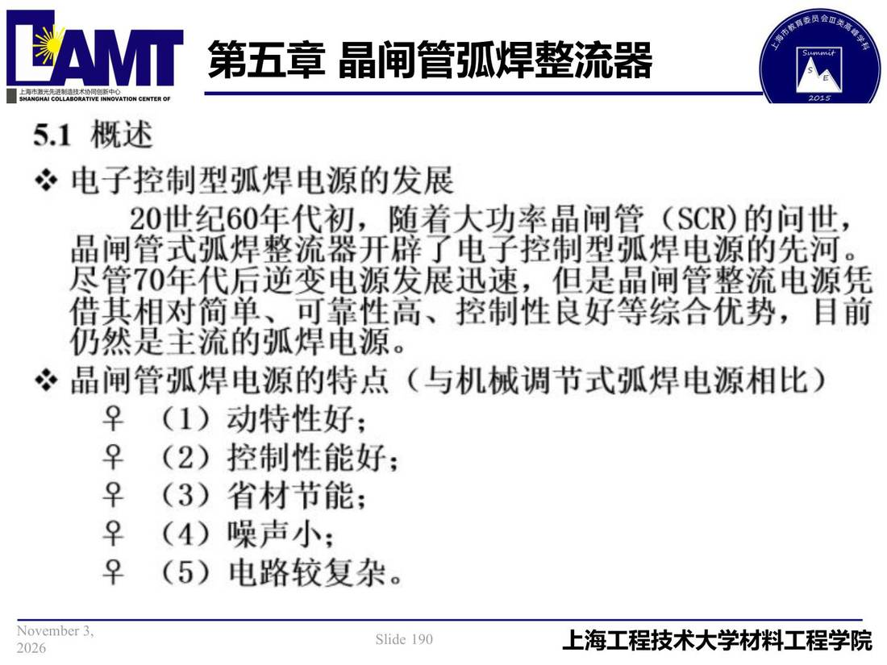

05 第5章 晶闸管弧焊整流器/p190 5.1 概述
p190 5.1 概述
📄 原文：📄 弧焊电源 课件（PDF 第 190 页）（幻灯片 190/273；PDF 第 190 页）
5.1 概述

讲义原文
本页在课件中是纯图文版式（无文字层），内容以页图与下面的 OCR 文本为准。
页面文字（OCR 机读，可能有错字，以页图为准）
5.1 概述 ※电子控制型弧焊电源的发展 20世纪60年代初，随着大功率晶闸管 （SCR）角问世， 晶闸管式弧焊整流开辟了电子控制型弧焊电源的先河。 管70年代后逆变 1是晶闸管憗流电源凭 尽管70年代后逆变电源发展迅速，但是晶闸管整流电源凭 借其相对简单、哥靠件高、控制性良好等综合优势，目前 仍然是主流弧焊电源。 ※晶闸管弧焊电源特点（与机械调节式弧焊电源相比） 早（1）动特性好； 子（2）控制性能好； （3）省材节能； （4）噪声小：